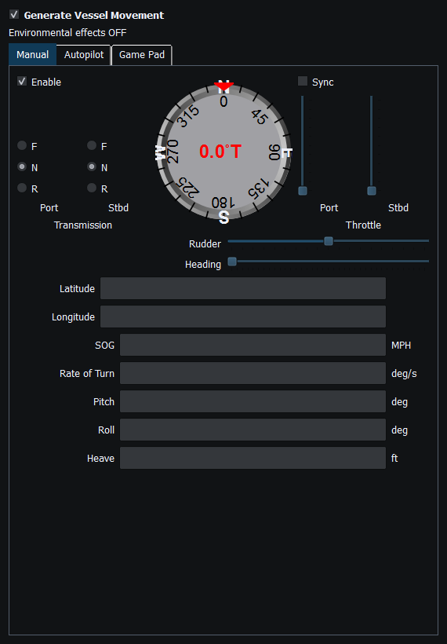

Manual Vessel Movement produces representative local position/attitude/navigation values from the configured vessel and controls. It is a simulator, not a command interface to real propulsion.
If the source reports an engine/profile readiness problem, correct that problem instead of raising throttle repeatedly. Manually entered speed and throttle-derived speed are different choices. Two-engine controls and synchronization depend on vessel configuration; do not assume a single-engine setup exposes every starboard control.
Generator Enable and Dispatch determine local source operation and instrument updates. Enable Sending remains a separate external-output decision. Pressing F12 stops Sending/service operations, but it is not a guarantee that local manual simulation has stopped. Turn off the active movement control when ending a local run.
Optional environmental influence uses valid available Weather conditions. It can introduce representative wind drift and wave attitude; it does not simulate every hydrodynamic effect. The current feature does not supply water-current or wind-induced-yaw physics. Inspect the environmental status rather than assuming every weather number is being applied.
Check source Enable, active movement tab/control, engine/profile readiness, speed source, gear and configured engine count. If the source moves but an instrument does not, check Dispatch, compatible bindings and instance identity. If instruments update but an external device does not, investigate global Sending and transport separately.
Figure 40. Manual movement controls for heading, rudder, throttle and transmission gear. Click to enlarge.

Figure 41. Manual movement operates locally; generator Dispatch and external Sending remain separate gates. Click to enlarge.
Generating NMEA Data · Enable, Dispatch and Sending · Autopilot and Route Following · Game Controller Mode · Engine and Transmission Simulation · Weather and Environmental Simulation · AIS Simulation · Windlass Simulation · Connection Troubleshooting · Route Overview · Engineering Units